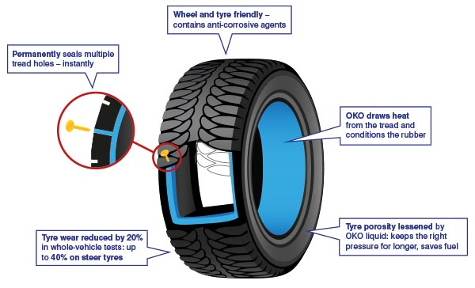

Permanent Puncture Sealing
Puncture sealing depends partly upon centripetal acceleration (often wrongly described as ‘centrifugal force’). This in the case of a moving vehicle is the force of the tyre’s circulation, and it imparts a huge pressure which – combined with the sudden loss of air – when a puncturing object causes a hole, forces the OKO violently into a small space. The squeezing effect causes OKO to deploy as it is designed to do, turning it from a liquid into a flexible but very strong solid that seals the hole almost instantaneously.
Little air is lost and only a few ml of OKO is used: the rest of the liquid in the tyre well keeps on revolving, ready to counter the next puncture, for the legal life of the tyre.
Unlike other sealant companies, OKO has invested heavily in independent testing, using meaningful protocols. To assess whether its seal is genuinely permanent, a strength test was carried out by the world-renowned military testing institution, Gerotek. The tyre industry recognises two ‘permanent’ repair types: vulcanising and plugs. On testing each system to destruction, the Institute found that OKO was 1.6 times stronger than vulcanisation: and 7 times stronger than a plug repair.
People often ask why the OKO does not gum up a tyre valve when you let a little air out. In this situation there is no centripetal acceleration and the OKO is not deployed, also the sealant is not normally in proximity to the valve.
Formulation
OKO is built to last. Based upon water and anti-freeze agents, it is formulated so that all of its active ingredients remain in suspension and no shaking is required. Far too many water-based sealants require you to shake before using – and that is the sign of a sealant that will not work for the long term.
Many people have tried to analyse and duplicate the OKO formulae but all have failed: because some of the most critical elements are present in such small quantities that they will not register in analyses.
We also do not skimp: from the quality of the rubber crumb particles, to the fibres and the powders that act to seal the punctures by bonding with the rubber tread, we select the best, not the cheapest. Cutting-edge products from the leading chemical companies in the UK, Germany and USA are deployed to maximum effect.
Added Benefits
Deploying OKO brings with it added-value benefits that help to lengthen tyre life. All tyres are porous and many vehicles run on under-inflated tyres, leading to uneven tyre wear as a result. OKO seals the tread area, thus reducing air loss. The liquid helps to draw away some heat from the tread, which builds up its temperature the longer it is in motion. Heat and under-inflation are the prime causes of premature tyre wear. The rubber suffers from drying out and the friction effects of the road and the wheel/tyre drag also contribute to wear. OKO can help to condition the tyre from inside.